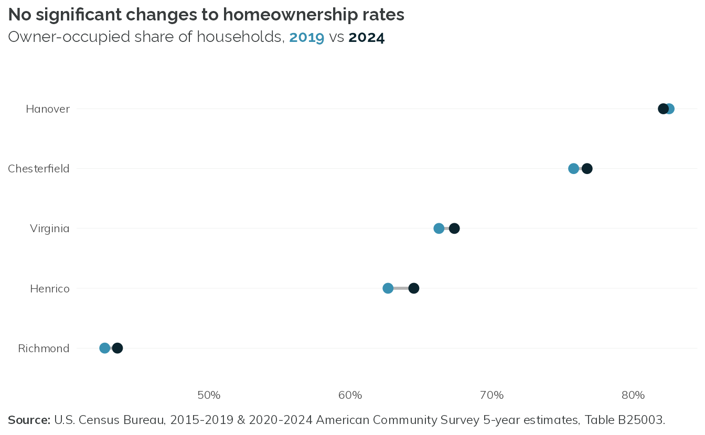
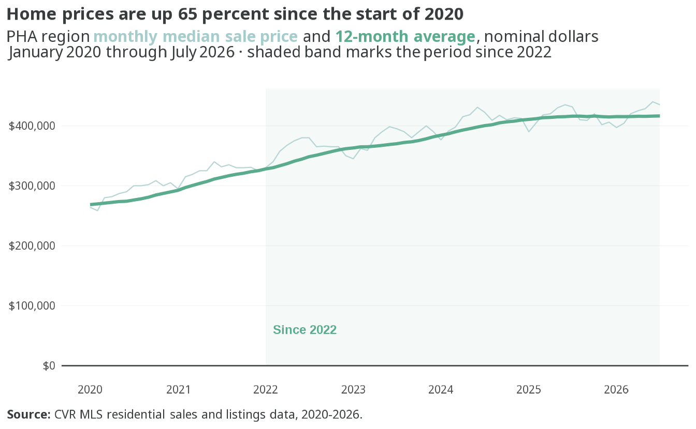
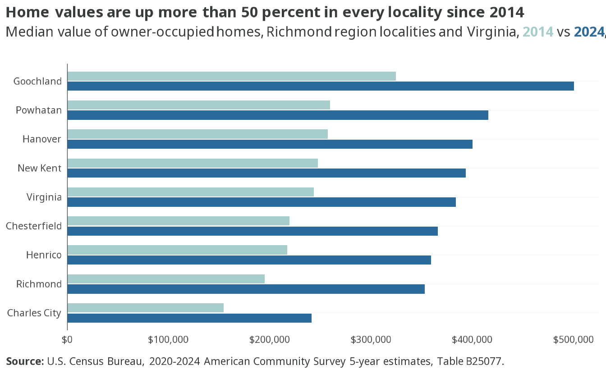
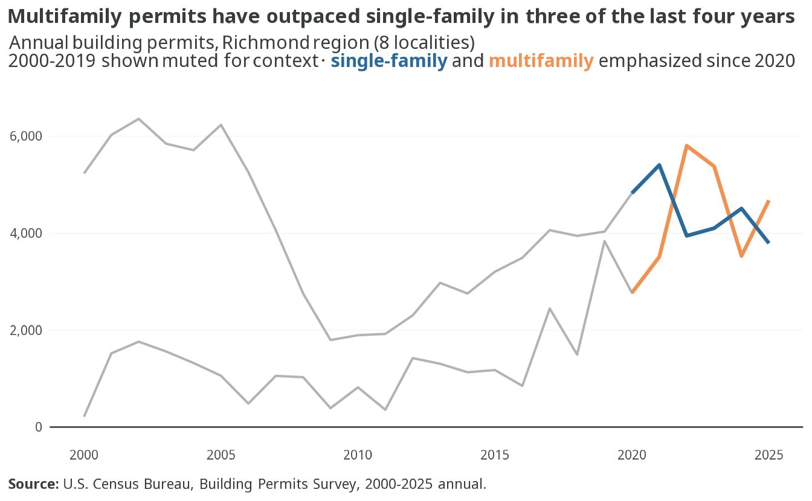

2 Homeownership market
2.1 Homeownership rates remain stable
- The region as a whole is 65.1% owner-occupied in 2024, just below the statewide rate of 67.3 percent.
- Hanover is the only primary locality where the owner share fell since 2019, dipping slightly from 82.5 to 82.1 percent.
- The four core localities barely moved since 2019 — Richmond city (43.5 percent) remains the region’s only majority-renter jurisdiction, and Hanover (82.1 percent) the highest among them.
2.2 Racial homeownership gap remains high across region

- White, non-Hispanic households own at 74.6%, 24.8 percentage points above Black households at 49.8% and 26.4 points above Hispanic or Latino households at 48.3%.
- Two groups sit above the region-wide rate of 65.1%: White, non-Hispanic and Asian (70.7%).
- Another race is the lowest group at 41.7%, and multiracial households sit between the two poles at 54.9%.
- Black and Hispanic or Latino households are the region’s two largest groups after White, non-Hispanic — 117,413 and 27,491 households — so the two lowest large-group rates cover roughly a third of all households in the four localities.
![Four small horizontal bar charts, one per primary locality, of the 2024 homeownership rate by race and ethnicity of householder. White, non-Hispanic households own at 84.2 percent in Hanover, 83.9 in Chesterfield, 74.0 in Henrico, and 52.6 in Richmond city. Black households trail White, non-Hispanic households by 23.2 points in Henrico, 20.6 in Chesterfield, 16.4 in Richmond city, and 15.3 in Hanover. Richmond city posts the lowest rate for every group, from 52.6 percent for White, non-Hispanic households down to 20.3 percent for another race. Two Hanover cells, Asian and another race, are suppressed for low reliability.](ownership_files/figure-html/fig-owner-race-local-1.png)
- The White-Black ownership gap is present in all four primary localities: 23.2 points in Henrico, 20.6 in Chesterfield, 16.4 in Richmond city, and 15.3 in Hanover.
- Richmond city posts the lowest rate for every group, from 52.6 percent for White, non-Hispanic households to 20.3 percent for another race.
- Asian households have the widest locality spread of any reported group — 86.1 percent in Chesterfield and 68.8 in Henrico against 40.3 percent in Richmond city, a 46-point range.
- Hispanic or Latino households own at 65.4 percent in Hanover and 59.2 in Chesterfield, but 29.9 percent in Richmond city.
- Rates for two groups in Hanover (Asian and Another race) have low data reliability due to limited number of households
2.3 Home prices surged, then started to cool

- The median sale price reached $435,000 in July 2026, up 65% from $264,000 in January 2020.
- Prices kept climbing after 2022: the 12-month average is up 27% since January 2022, from about $327,997 to $416,357.
- The steepest appreciation came in 2020-2022, when the 12-month average rose from roughly $268,541 to $327,997 — growth has continued since, but at roughly half that pace.
- Monthly medians are seasonal and noisy; the 12-month average, shown here since 2020, is the better read on trend.
2.4 Home values on the rise to reflect market

- Richmond city posted the fastest home value growth among the four primary localities since 2019 — up 53 percent, from $230,500 to $353,000 — continuing to erode its historical role as the region’s lower-cost ownership market.
- Every primary locality gained at least 33 percent since 2019, and all four now exceed the $350,000 mark.
- Hanover is the only primary locality above the statewide median home value of $383,700; Chesterfield and Henrico sit between $350,000 and the statewide median.
- Medians are locality-level ACS estimates and do not sum or average to a regional figure; all plotted values are High reliability.
2.5 Multifamily permits beginning to outpace single-family

- Since 2020, multifamily permits are up 69%, from 2,764 to 4,677 units, while single-family permits fell 24%, from 3,980 to 3,032.
- 2022 was the first year in the 2000-2025 record that regional multifamily volume exceeded single-family (5,804 vs 3,946 units) — a pattern that repeated in 2023 and again in 2025.
- Total regional permitting peaked in 2022 at 9,750 units, more than double the post-recession low of 2,186 in 2009, and has eased only modestly since.
2.6 Rising mortgage rates lock many buyers on the sidelines

- The 30-year fixed rate fell to a low of 2.68% in December 2020, peaked at 7.62% in October 2023, and stands at 6.54% as of July 2026 — more than double the 2020-2021 low.
- Home prices did not pause for the rate run-up: the median sale price rose from $264,000 in January 2020 to $435,000 by July 2026, the 65 percent gain covered above.
- Higher rates and higher prices are compounding rather than offsetting — a fixed monthly housing budget buys much less home today than it did when rates sat near 3 percent.
- The mortgage rate is Freddie Mac’s national PMMS survey, not Richmond-specific; both series here are nominal, unadjusted for inflation.